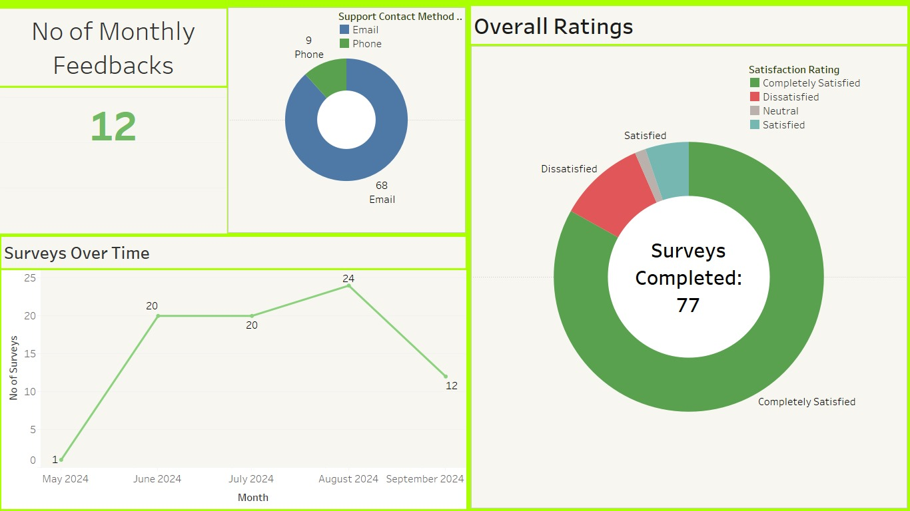
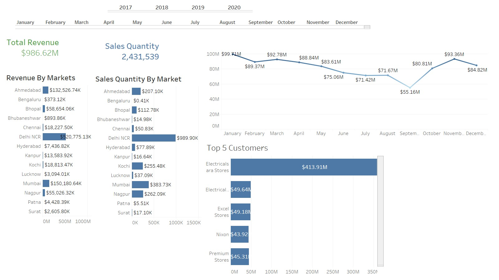
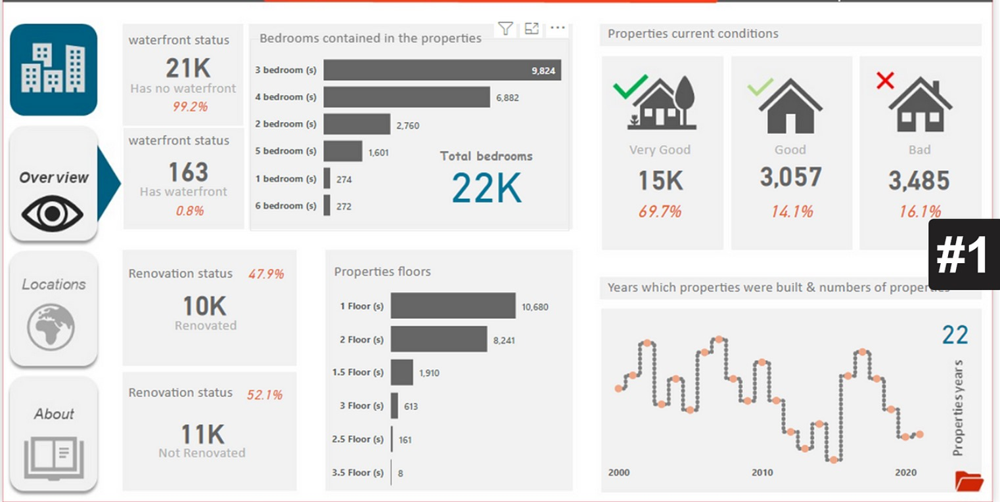
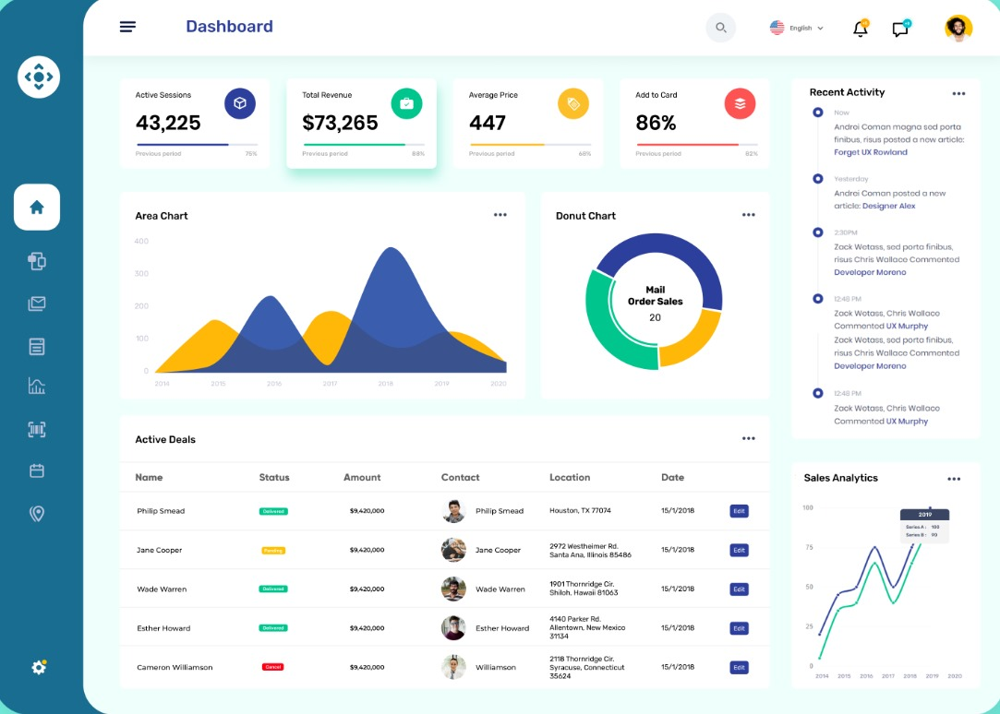
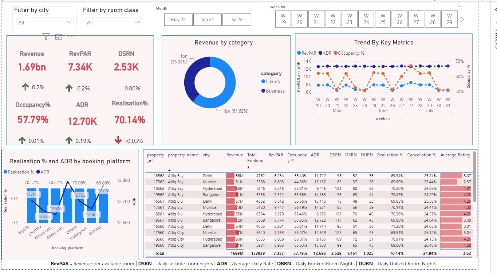

Benefits of Self-Serve Reporting Across Industries
Self-serve reporting offers significant benefits across various industries by empowering users to access and analyze data on their own without needing constant support from data teams. Here are some key advantages:
1. Faster Decision-Making
Users across industries can quickly access the data they need in real-time, allowing them to make informed decisions on the spot. For example, hotel managers can track occupancy rates and revenue trends from dashboards, while retail managers can view sales and profit margins by market to adjust their strategies rapidly.
2. Improved Accessibility
Self-serve reports are available to all employees regardless of their technical background. Whether it's sales, marketing, or finance teams, anyone can use these dashboards to get the information they need without waiting for IT or data analysts to generate reports for them.
3. Tailored Insights
Self-serve dashboards allow users to filter and drill down into the data most relevant to their specific needs. For instance, in the hospitality industry, managers can filter reports by room type or city, while e-commerce managers can focus on customer type and purchase channels.
4. Enhanced Collaboration
When multiple stakeholders have access to the same data, it promotes transparency and collaboration. Teams can work together with a shared understanding of performance metrics, reducing miscommunication and aligning strategies across departments.
5. Cost and Time Savings
Self-serve reporting reduces the burden on data analysts and IT teams, who no longer need to create ad-hoc reports for every request. This frees up time for the data team to focus on higher-value tasks like advanced analysis and insights generation. At the same time, other teams can operate more efficiently by directly accessing the reports they need.
6. Customization and Flexibility
Users can tailor reports to their specific needs, such as viewing only relevant KPIs, adjusting time ranges, or filtering by product categories or geographic regions. This flexibility is valuable in industries like retail, finance, and manufacturing, where needs can vary significantly from one department to another.
7. Better Strategic Alignment
Self-serve dashboards make it easier for companies to align their KPIs across teams. For example, marketing, sales, and product teams can all access the same data on customer trends and revenue, ensuring their strategies are in sync with overall company goals.
8. Real-Time Performance Tracking
In industries where timely data is critical, such as logistics, healthcare, or hospitality, self-serve dashboards provide real-time updates on key metrics, allowing businesses to react quickly to changes, spot opportunities, and address issues before they escalate.
By enabling employees across industries to interact with data directly through user-friendly dashboards, businesses can foster a more data-driven culture, enhance efficiency, and improve outcomes.

Customer Feedback and Satisfaction Overview
This dashboard provides a summary of customer feedback, focusing on the number of monthly surveys completed, the overall customer satisfaction rating, and the methods customers used to provide feedback (phone or email). It tracks customer satisfaction over time and allows businesses to see how feedback is evolving. This report is particularly useful for customer service managers and quality assurance teams who want to measure customer satisfaction, identify trends, and take actions to improve the customer experience based on real-time feedback.
Learn more

Sales and Revenue by Market and Top Customers
This dashboard offers a detailed view of total revenue and sales quantities by market, highlighting the top-performing regions and the most valuable customers. It tracks sales trends over time and provides insights into customer purchasing patterns. The dashboard also lists the top 5 customers by revenue, offering a clear view of where the most significant business is coming from. This report is highly beneficial for sales managers, marketing teams, and executives who want to focus on driving revenue growth by identifying high-value markets and key customer segments.
Learn more

Revenue and Profit Margin by Market and Channel
This dashboard provides a detailed view of total revenue and profit margins across various markets and sales channels, offering insights into both performance and profitability. It breaks down revenue and profit margins by geographical markets and customer types (Brick & Mortar vs. E-Commerce), showing which regions and channels are the most profitable. The dashboard also tracks trends over time, helping to identify fluctuations in profit margins and revenue generation across months and years. It is especially useful for sales managers, finance teams, and executives looking to analyze the financial performance of different markets and optimize strategies based on profitability and market trends.
Learn more

Property Overview and Renovation Status Report
This dashboard provides a comprehensive overview of the properties under management, focusing on key metrics such as waterfront status, the number of bedrooms, property conditions, and renovation status.A timeline graph also tracks the number of properties built over the years, offering insight into property age distribution. This report is ideal for property managers looking to understand the current state and renovation progress of a property portfolio.

Sales Performance and Activity Overview
This dashboard provides a snapshot of a business's key performance metrics, focusing on sales and user activity. The area chart visualizes trends over time, highlighting sales fluctuations. A donut chart breaks down sales from different channels, such as mail orders. Additionally, it tracks current deals, their status, and details such as amount and location, offering a quick view of ongoing business transactions. Recent activity logs and sales analytics offer further insights into customer interactions and business performance trends, making this dashboard ideal for tracking overall sales progress and active operations.
Learn more

Hotel Performance and Booking Insights Dashboard
This dashboard offers a comprehensive overview of a hotel's key performance indicators, such as revenue, occupancy, and average daily rate (ADR). It helps hotel managers track business performance across different room categories, cities, and booking platforms. The dashboard visualizes trends in important metrics, including occupancy rates and revenue per available room (RevPAR), helping to identify patterns in customer preferences and booking behavior. By providing insights into cancellation rates, booking trends, and platform performance, this report is essential for hotel management teams, revenue managers, and decision-makers who want to optimize room pricing, improve occupancy rates, and increase overall revenue.
Learn more
{kind=link}
{kind=link}
{kind=link}
{kind=link}
{kind=link}